Flight, Optimization, and Wind Laboratory
© 2016. All rights reserved.
Flight, Optimization, and Wind Laboratory
© 2016. All rights reserved.
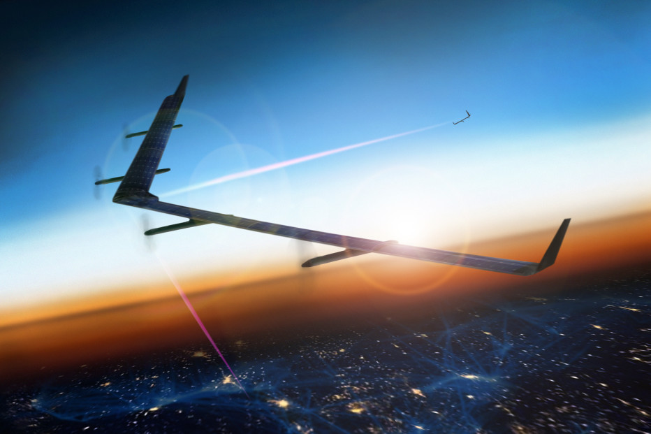 Photo: Facebook
For high aerodynamic efficiency large wing spans are necessary, but the benefits of low induced drag creates strong tradeoffs against structural weight and cost. Similarly, increased energy storage capacity carries heavy weight penalties causing endurance tradeoffs. Because of the demanding performance requirements and the high interaction between disciplines, manual design solutions are highly unlikely to yield robust and effective solutions. Multidisciplinary design analysis and optimization is needed both to meet performance requirements effectively and to objectively compare alternative design concepts.
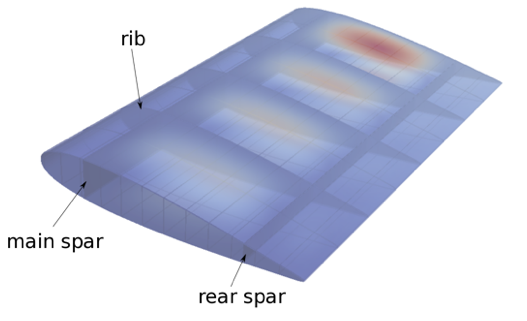
CAD formats provide a rich geometric description but usually require manual geometry repair and mesh generation steps that makes automating high-fidelity analyses difficult. IGA generalizes finite element analysis to allow operation directly on an analysis-suitable geometry. In addition, with IGA we can provide exact gradients of structural outputs. By tightly coupling structural analyses with computational fluid dynamics, and deriving coupled gradients, we can perform efficient analysis and design of rich geometric descriptions with applications in flexible aircraft wing and wind turbine blade aeroelastic design.
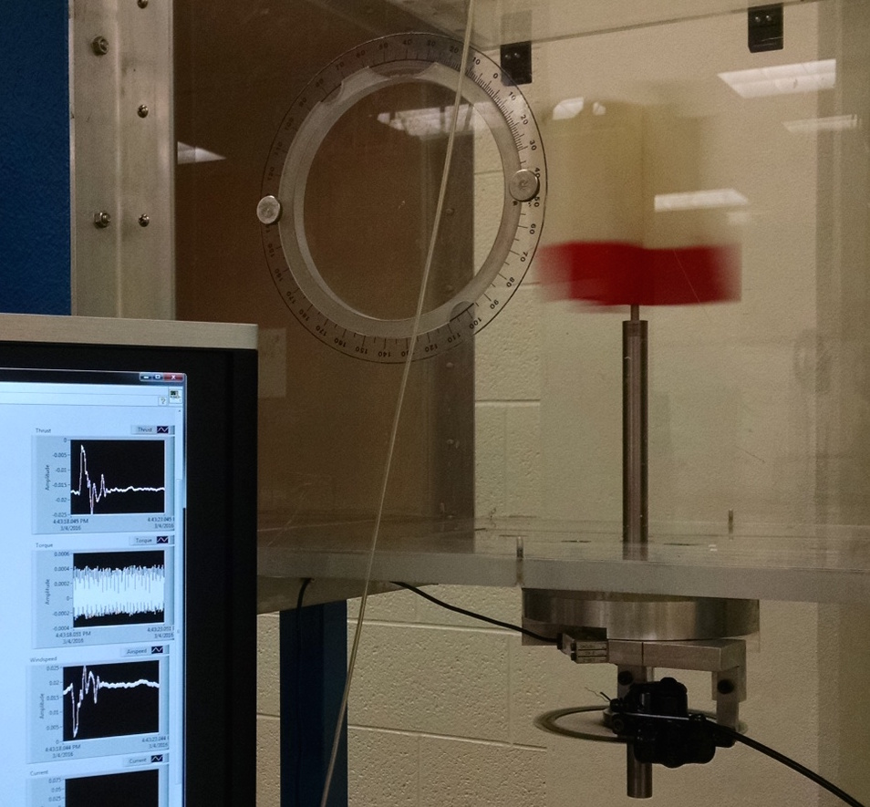
Characterizing the performance of complex vertical axis wind turbine shapes cannot be done with textbook analysis methods. We are investigating the performance of novel VAWT designs using a combination of wind tunnel testing with a custom-built torque sensor, and 3-dimensional unsteady RANS simulations.
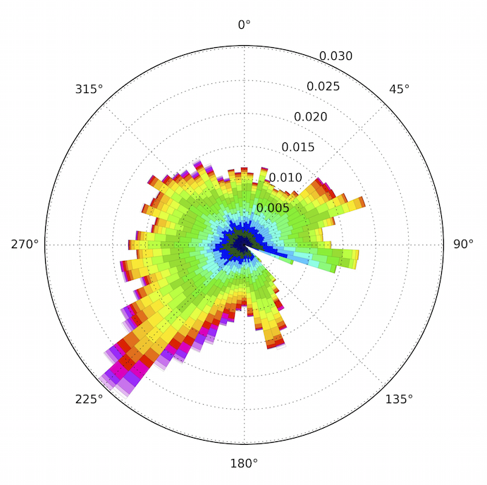
Effective wind farm optimization involves a large number of design variables and contains many sources of uncertainty (e.g., wind direction, wind speed, turbulence levels, wake model parameters, etc.). We are developing methodology for large-scale optimization under uncertainty with applications in improving the robustness of wind farm energy capture.
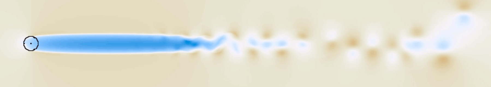
Vertical axis wind turbines (VAWTs) are a promising technology for offshore applications and in the built environment. Performance of wind farms is highly dependent on effective integration, and this research is focused on developing engineering wake models for VAWTs to enable farm optimization.
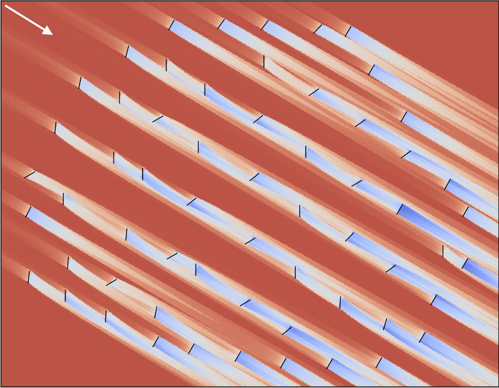
Efficient layout design is a significant challenge, and today’s wind farms underperform energy capture expectations by around 10-20%. We seek to efficiently combine turbine, layout, and controls optimization in an integrated manner.
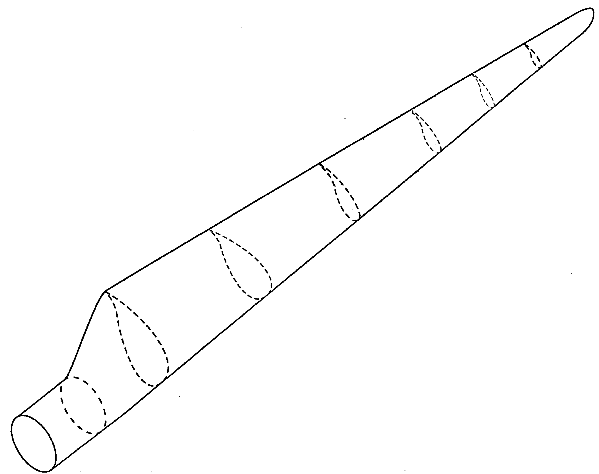
Free-form design means simultaneous airfoil and blade design as opposed to the traditional sequential approach. We are exploring free-form design through a range of fidelities including pretabulated data, panel methods, 2D CFD, and 3D CFD.
Essential tremor (ET) is one of the most common movement disorders, estimated to affect 1-12 million people in the US. We are developing optimization models in collaboration with the BYU Neuromechanics Research Group to help establish the mechanical origin of the tremor.
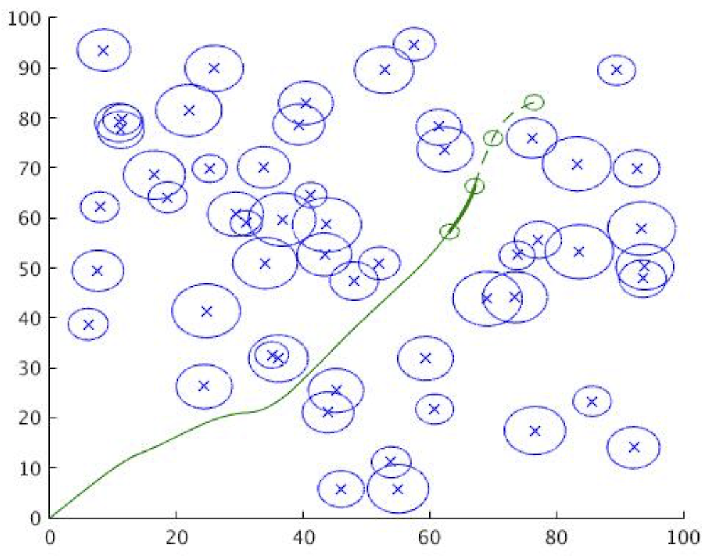
Robust UAV trajectory optimization is steeped with challenges including static and dynamic obstacles, performance variability, uncertain environmental conditions, component failures, etc. We are exploring convex optimization approaches, exploratory gradient-based approaches, and UAV aerodynamic performance modeling.
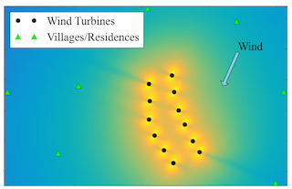
Acoustics can play an important role in wind farm design and we are interested in understanding its impact through optimization and in developing better acoustic models for wind farms.
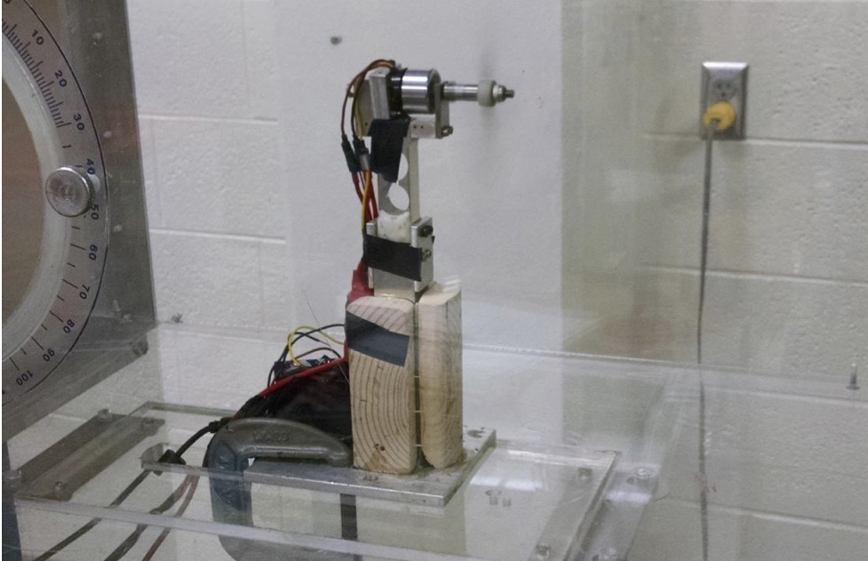
We are conducting wind tunnel tests to characterize performance of novel UAV propeller concepts.
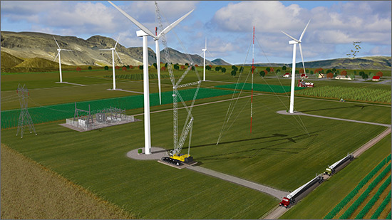 Efficient extraction of wind energy is a complex, multidisciplinary process. We have developed a number of open-source integrated wind turbine analysis tools as part of the WISDEM toolset. Many of these tools provide exact gradients through automatic differentiation and/or adjoint methods. These tools have supported a number of turbine design studies.

We explore a safer approach to formation flying of transport aircraft, which we term extended formation flight. Extended formations take advantage of the persistence of cruise wakes and extends the streamwise separation between the aircraft by at least five wingspans. At large distances, considerations such as wake rollup, atmospheric effects on circulation decay, and vortex motion become important to consider. We examine the wake rollup process in the context of extended formations and develop appropriate physics-based models.